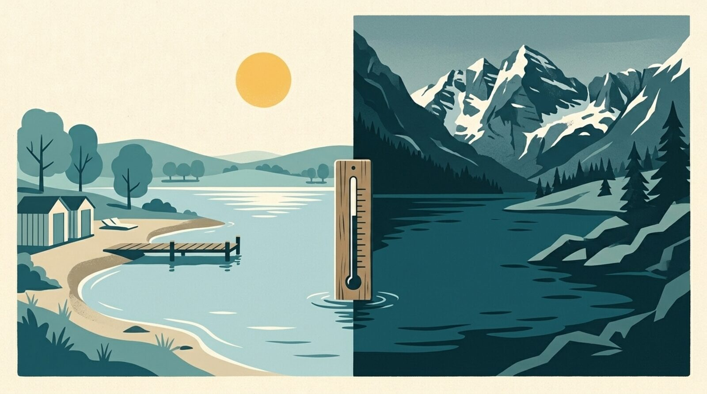

Kurz gesagt
Die 25 Seen von Mein See haben nicht zur selben Zeit dieselbe Temperatur: Der Unterschied zeigt sich jeden Morgen in den Daten des Modells Alplakes (Eawag). Diese Seite zeigt die Rangliste des Tages mit Datum; sie ändert sich täglich.
Die Rangliste vom Morgen
Mittelwert der Badeplätze jedes Sees, Morgentemperatur vom 20. November 2026 (Alplakes-Modell, Eawag). Sie ändert sich täglich.
Am wärmsten
- Lago Maggiore : 14.5 °C
- Zürichsee : 13.3 °C
- Luganersee : 13.2 °C
- Greyerzersee : 12.4 °C
- Thunersee : 11.6 °C
Am kältesten
- Silvaplanersee : 5.7 °C
- Sarnersee : 9.3 °C
- Lac de Joux : 9.4 °C
- Genfersee : 9.4 °C
- Lac de Bret : 9.7 °C
Wie man diese Rangliste liest
Jeder Wert ist der Mittelwert der Modelltemperatur an den Badeplätzen eines Sees am Morgen. Es ist eine Modellschätzung in etwa 70 cm Tiefe: Sie kann von dem abweichen, was man an einem sonnigen Nachmittag spürt. Seen ohne Modell (Domaine des Îles in Sitten) fehlen.
Für jeden See
Die Seite jedes Sees nennt seine Badeplätze, ihre Morgentemperatur und die Grunddaten (Fläche, Tiefe, Höhe): siehe zum Beispiel die Temperatur des Genfersees. Die ganze Liste steht unter alle Badeplätze.
Ein Beispiel: August 2023
Anfang August 2023 hatte der Genfersee bei Montreux 23 °C und im Petit-Lac bei Genf 9 °C. Da weder Regen noch Hochwasser das erklären, sieht MeteoSchweiz darin aufsteigendes kaltes Tiefenwasser («Upwelling»), einen Kontrast, den sie als aussergewöhnlich bezeichnet. Die Temperatur desselben Sees kann also von Ufer zu Ufer stark schwanken.
Wind, Wassertemperatur und Bise von heute, Badeplatz für Badeplatz, stehen in der App Mein See.
Das Wasser des Sees im Moment
Die Wassertemperatur jedes Badeplatzes steht in der App Mein See, alle drei Stunden aktualisiert.